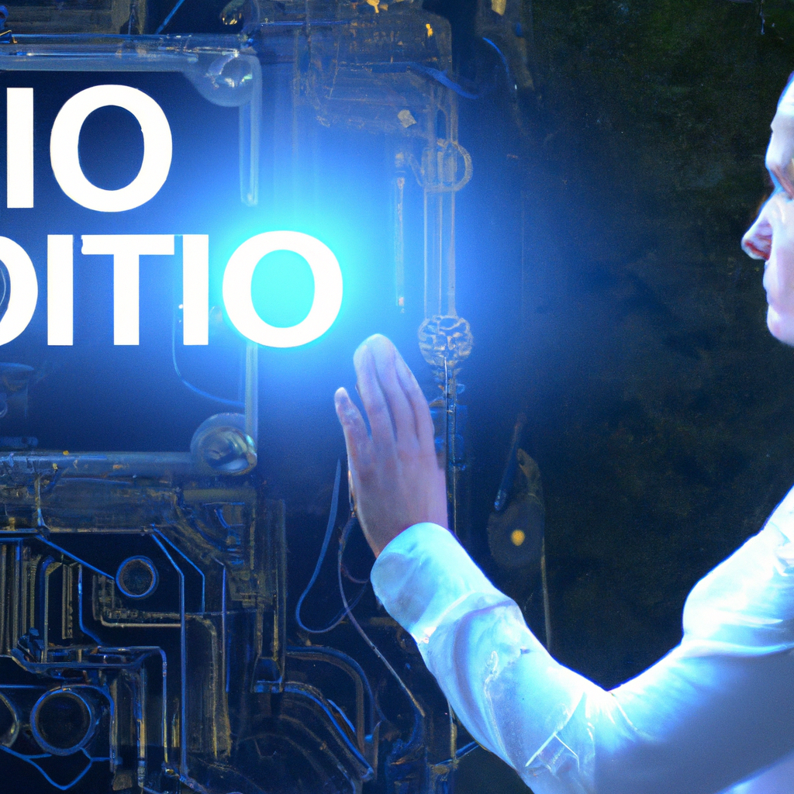

Why AI will never replace the CIO
As technology continues to evolve, many people have speculated that Artificial Intelligence (AI) will one day replace the Chief Information Officer (CIO). However, I believe that AI will never replace the CIO, but rather enhance and expand their role.
AI can be used to automate certain tasks, such as analyzing data and running predictive models. This allows the CIO to focus on more strategic tasks, such as aligning IT with business goals, driving digital innovation, and fostering collaboration. AI can also help CIOs to gain insights that they would have never been able to uncover without the help of machine learning algorithms.
In addition to helping CIOs gain insights, AI can also help them to manage risk. By leveraging AI, CIOs can quickly identify potential security risks and take action to mitigate them. AI can also help CIOs to monitor their networks for unusual or suspicious activity.
Ultimately, AI has the potential to significantly enhance the role of the CIO. However, AI will never replace the CIO, because the CIO is ultimately responsible for developing and executing strategies that align with the company’s goals.
AI can be a powerful tool, but it can’t replace the critical thinking, decision-making, and leadership skills that CIOs bring to the table. CIOs are essential for navigating the ever-evolving technology landscape and ensuring that their organization is staying ahead of the competition.
In conclusion, AI will never replace the CIO, but rather enhance and expand their role. CIOs will continue to be essential for driving digital innovation, aligning IT with business goals, and fostering collaboration.